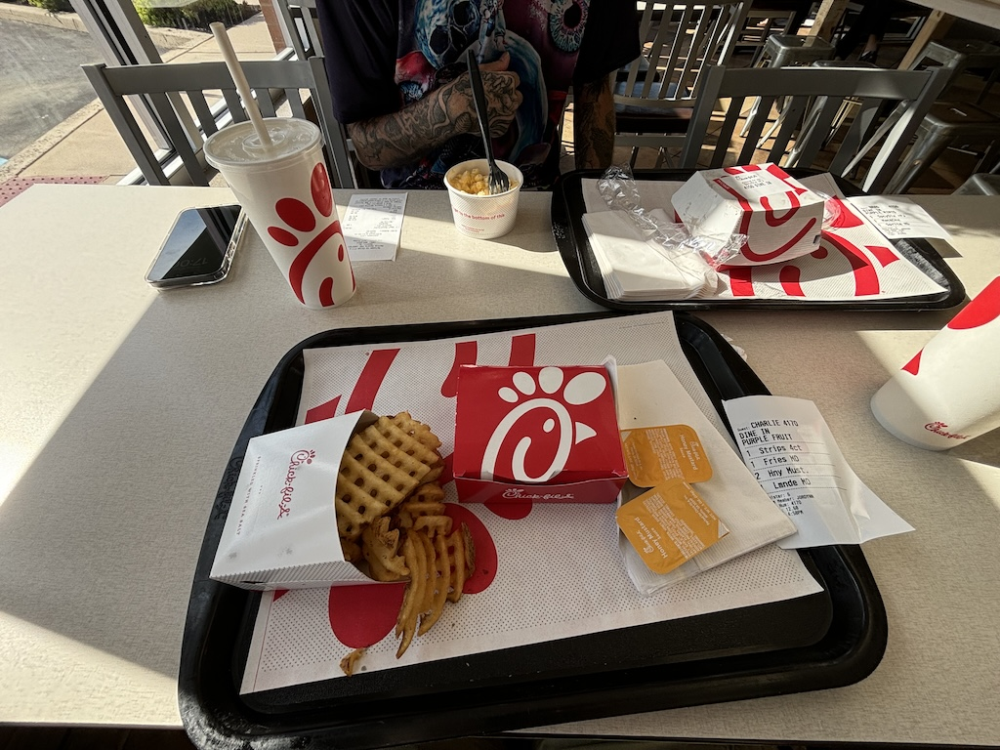

20th June 2024
Now Philadelphia has lots to do and I definitely could have spent another day in the city. But with the idea of going for a swim in the sea and the fact I have a car which I can go anywhere in I decided to spend my final day doing a day trip to the coast. With a quick bit of research I found out Cape May (at the very bottom tip of New Jersey) is a great place to go to the beach. I even persuaded an Aussie called Brad from the hostel to come along for the ride.
The streets here felt just like an American suburban TV show, with well kept lawns and wide clean roads. There were very few people around, which may have just been the heat, but I do suspect it is partially due to most of these houses being holiday homes for wealthy city dwellers.

We got to the beach and a man in a kiosk told us we had to buy a "beach tag". For Europeans like myself and Australians like Brad the idea of paying for the beach is ludicrous, but as I have now learnt lots of beaches in the US are privately owned. After asking if there was a beach that didn't cost $10 to enter we ended up driving a few minutes up the coast to Wildwood beach which was free to enter.
Being very flat and sandy Wildwood beach would have been perfect for a game of beach cricket or rounder, but as we had no bat, balls or players we spent our few hours here swimming and chatting by the sea.
We saw a man selling iced coffee from a cart heading our way. In front of us 2 women bought a drink each. It looked absolutely horrible. He sprayed a spout from what looked like a large cooler of coffee into a metal mixing cup, for sure lined with wind-swept sand, added ice and mixed. The plastic cup he served the women the drinks in didn't look much cleaner and after charging them $7 dollars a drink they ended up giving a large tip, handing a $20 over for the both of them. I sincerely hope it tasted better than it looked, because it looked awful.
Brad is a bar worker from Brisbane and has seen a lot of the USA already, having traveled for the past 3 or so weeks from Hawaii eastward. He proposed a race to the water which of course with a competitive edge to my voice I agreed to. A couple from New Jersey next to us agreed to count us in, finding this race between nations quite entertaining. It ended up being a dead heat, although I'd argue I face planted into the water slightly more spectacularly. Turns out Brad had never swam in the Atlantic and after doing so I got the detailed review from him that "it's cold, colder than home". How the Australians have a way with words ay.
On the way home we stopped by Chick-fil-a for a quick bite. For those wondering it is pretty much the same as KFC, perhaps a little less greasy than the ones in the UK.
Brads card got rejected so I spotted him the $13 he needed. We agreed if he didn't pay me back I have permission to track down the bar he works at in Brisbane for it. As of now it looks like I'll be doing exactly that. Perhaps I can get it in the form of a tab...
Continue the story with my next blog about my time in the Big Apple. Otherwise return home.